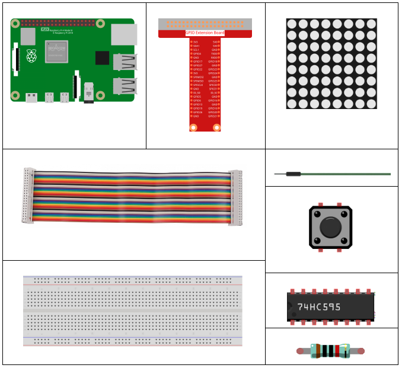
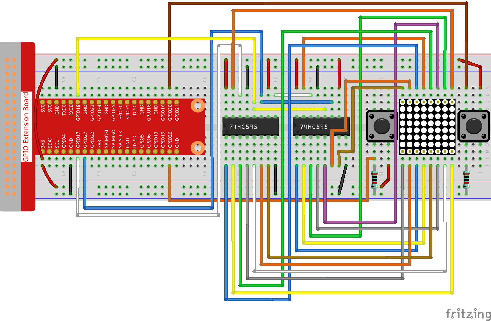

Note
Hello, welcome to the SunFounder Raspberry Pi & Arduino & ESP32 Enthusiasts Community on Facebook! Dive deeper into Raspberry Pi, Arduino, and ESP32 with fellow enthusiasts.
Why Join?
Expert Support: Solve post-sale issues and technical challenges with help from our community and team.
Learn & Share: Exchange tips and tutorials to enhance your skills.
Exclusive Previews: Get early access to new product announcements and sneak peeks.
Special Discounts: Enjoy exclusive discounts on our newest products.
Festive Promotions and Giveaways: Take part in giveaways and holiday promotions.
👉 Ready to explore and create with us? Click [here] and join today!
3.1.14 GAME– Not Not
Introduction
In this lesson, we will make an interesting game device, and we call it "Not Not".
During the game, the dot matrix will refresh an arrow randomly. What you need to do is to press the button in the opposite direction of the arrow within a limited time. If the time is up, or if the button in the same direction as the arrow is pressed, you are out.
This game can really practice your reverse thinking, and now shall we have a try?
Components
Schematic Diagram
T-Board Name |
physical |
wiringPi |
BCM |
GPIO17 |
Pin 11 |
0 |
17 |
GPIO18 |
Pin 12 |
1 |
18 |
GPIO27 |
Pin 13 |
2 |
27 |
GPIO20 |
Pin 38 |
28 |
20 |
GPIO26 |
Pin 37 |
25 |
26 |
Experimental Procedures
Step 1: Build the circuit.
{kind=link}
For C Language Users
Step 2: Go to the folder of code.
cd ~/davinci-kit-for-raspberry-pi/c/3.1.14/
Step 3: Compile.
gcc 3.1.14_GAME_NotNot.c -lwiringPi
Step 4: Run.
sudo ./a.out
After the program starts, a left or right arrow will be refreshed at random on the dot matrix. What you need to do is to press the button in the opposite direction of the arrow within a limited time. Then "√" appears on the dot matrix. If the time is up, or if the button in the same direction as the arrow is pressed, you are out and the dot matrix displays "x". You can also add 2 new buttons or replace them with Joystick keys for up, down, left and right— 4 directions to increase the difficulty of the game.
Note
If it does not work after running, or there is an error prompt: "wiringPi.h: No such file or directory", please refer to C code is not working?.
Code Explanation
Based on 1.1.6 LED Dot Matrix, this lesson adds 2 buttons to make an amusing game device. So, if you are not very familiar with the dot matrix, please refer to 1.1.6 LED Dot Matrix.
The whole program process is as below:
Randomly select an arrow direction and generate timer 1.
Display the arrow image on the dot matrix.
Judge the button input. If the button is pressed or timer 1 reminds time’s up, judgement starts.
Display the image on the basis of a judging result; meanwhile, generate timer 2.
Rerun step 1 when timer 2 reminds time’s up.
struct GLYPH{
char *word;
unsigned char code[8];
};
struct GLYPH arrow[2]=
{
{"right",{0xFF,0xEF,0xDF,0x81,0xDF,0xEF,0xFF,0xFF}},
// {"down",{0xFF,0xEF,0xC7,0xAB,0xEF,0xEF,0xEF,0xFF}},
// {"up",{0xFF,0xEF,0xEF,0xEF,0xAB,0xC7,0xEF,0xFF}},
{"left",{0xFF,0xF7,0xFB,0x81,0xFB,0xF7,0xFF,0xFF}}
};
struct GLYPH check[2]=
{
{"wrong",{0xFF,0xBB,0xD7,0xEF,0xD7,0xBB,0xFF,0xFF}},
{"right",{0xFF,0xFF,0xF7,0xEB,0xDF,0xBF,0xFF,0xFF}}
};
GLYPH structure works like a dictionary: the word attribute corresponds to the key on the dictionary; the code attribute corresponds to the value.
Here, code is used to store an array for dot matrix to display images (an 8x8 bit array).
Here, the array arrow can be used to display the arrow pattern in up, down, left and right directions on the LED dot matrix.
Now down and up are commented and uncomment them if needed.
The array check is used to display these two images: "×" and "√".
char *lookup(char *key,struct GLYPH *glyph,int length){
for (int i=0;i<length;i++)
{
if(strcmp(glyph[i].word,key)==0){
return glyph[i].code;
}
}
}
The function lookup() works by "checking the dictionary". Define a key, search the same words as key in the structure GLYPH *glyph and return the corresponding information— "code" of the certain word.
The function Strcmp() is used to compare the identity of two character strings glyph[i].word and key; if the identity is judged, return glyph[i].code ( as shown).
void display(char *glyphCode){
for(int i;i<8;i++){
hc595_in(glyphCode[i]);
hc595_in(0x80>>i);
hc595_out();
}
}
Display the specified pattern on the dot matrix.
void createGlyph(){
srand(time(NULL));
int i=rand()%(sizeof(arrow)/sizeof(arrow[0]));
waypoint=arrow[i].word;
stage="PLAY";
alarm(2);
}
The function createGlyph() is used to randomly select a direction (the word attribute of an element in the array arrow[]: "left", "right"… ). Set the stage as "PLAY" and start a 2-second alarm clock function.
srand(time(NULL)): Initializes random seeds that are from the system clock.
(sizeof(arrow)/sizeof(arrow[0]))： Get the length of the array, the outcome is 2.
rand()%2: The remainder is 0 or 1, gotten from dividing a generated random number by 2.
waypoint=arrow[i].word: The outcome should be "right" or "left".
void checkPoint(char *inputKey){
alarm(0)==0;
if(inputKey==waypoint||inputKey=="empty")
{
waypoint="wrong";
}
else{
waypoint="right";
}
stage="CHECK";
alarm(1);
}
checkPoint() is used to check the button input; if the button is not pressed or the button in the same direction as the arrow is pressed, the outcome of the waypoint is wrong and "x" appears on the dot matrix. Otherwise, the waypoint is right and dot matrix displays "√". Here the stage is CHECK, and there can be set a 1-second alarm clock function.
alarm() is also called "alarm clock", in which a timer can be set, and it sends SIGALRM signals to the progress when the defined time is up.
void getKey(){
if (digitalRead(AButtonPin)==1&&digitalRead(BButtonPin)==0)
{checkPoint("right");}
else if (digitalRead(AButtonPin)==0&&digitalRead(BButtonPin)==1)
{checkPoint("left");}
}
getKey() reads the states of the these two buttons; if the right button is pressed, the parameter of the function checkPoint() is right and if the left button is pressed, the parameter is left.
void timer(){
if (stage=="PLAY"){
checkPoint("empty");
}
else if(stage=="CHECK"){
createGlyph();
}
}
Previously, timer() was called when set as the alarm() time’s up. Then under the "PLAY" mode, checkPoint() is to be called to judge the outcome. If the program is set to "CHECK" mode, the function createGlyph() should be called to select new patterns.
void main(){
setup();
signal(SIGALRM,timer);
createGlyph();
char *code = NULL;
while(1){
if (stage == "PLAY")
{
code=lookup(waypoint,arrow,sizeof(arrow)/sizeof(arrow[0]));
display(code);
getKey();
}
else if(stage == "CHECK")
{
code = lookup(waypoint,check,sizeof(check)/sizeof(check[0]));
display(code);
}
}
}
The working of the function signal(SIGALRM,timer): calling the timer() function when a SIGALRM signal (generated by the alarm clock function alarm()) is received.
When the program starts, call createGlyph() one time at first and then start the loop.
In the loop: under PLAY mode, the dot matrix displays arrow patterns and check the button state; if under CHECK mode, what is displayed is "x" or "√".
For Python Language Users
Step 2: Get into the folder of code.
cd ~/davinci-kit-for-raspberry-pi/python
Step 3: Run.
sudo python3 3.1.14_GAME_NotNot.py
After starting the program, on the dot matrix appears an arrow pointing to the right or the left. What you need to do is to press the button in the opposite direction of the arrow within a limited time. Then "√" appears on the dot matrix. If the time is up, or if the button in the same direction as the arrow is pressed, you are out and the dot matrix displays "x". You can also add 2 new buttons or replace them with Joystick keys for up, down, left and right— 4 directions to increase the difficulty of the game.
Code
Note
You can Modify/Reset/Copy/Run/Stop the code below. But before that, you need to go to source code path like davinci-kit-for-raspberry-pi/python.
import RPi.GPIO as GPIO
import time
import threading
import random
SDI = 17
RCLK = 18
SRCLK = 27
timerPlay = 0
timerCheck = 0
AButtonPin = 20
BButtonPin = 26
waypoint = "NULL"
stage = "NULL"
arrow={
#"down" :[0xFF,0xEF,0xC7,0xAB,0xEF,0xEF,0xEF,0xFF],
#"up":[0xFF,0xEF,0xEF,0xEF,0xAB,0xC7,0xEF,0xFF],
"right" : [0xFF,0xEF,0xDF,0x81,0xDF,0xEF,0xFF,0xFF],
"left":[0xFF,0xF7,0xFB,0x81,0xFB,0xF7,0xFF,0xFF]
}
check={
"wrong":[0xFF,0xBB,0xD7,0xEF,0xD7,0xBB,0xFF,0xFF],
"right":[0xFF,0xFF,0xF7,0xEB,0xDF,0xBF,0xFF,0xFF]
}
def setup():
GPIO.setmode(GPIO.BCM) # Number GPIOs by its BCM location
GPIO.setup(SDI, GPIO.OUT)
GPIO.setup(RCLK, GPIO.OUT)
GPIO.setup(SRCLK, GPIO.OUT)
GPIO.output(SDI, GPIO.LOW)
GPIO.output(RCLK, GPIO.LOW)
GPIO.output(SRCLK, GPIO.LOW)
GPIO.setup(AButtonPin,GPIO.IN)
GPIO.setup(BButtonPin,GPIO.IN)
# Shift the data to 74HC595
def hc595_shift(dat):
for bit in range(0, 8):
GPIO.output(SDI, 0x80 & (dat << bit))
GPIO.output(SRCLK, GPIO.HIGH)
GPIO.output(SRCLK, GPIO.LOW)
def display(glyphCode):
for i in range(0, 8):
hc595_shift(glyphCode[i])
hc595_shift(0x80>>i)
GPIO.output(RCLK, GPIO.HIGH)
GPIO.output(RCLK, GPIO.LOW)
def creatGlyph():
global waypoint
global stage
global timerPlay
waypoint=random.choice(list(arrow.keys()))
stage = "PLAY"
timerPlay = threading.Timer(2.0, timeOut)
timerPlay.start()
def checkPoint(inputKey):
global waypoint
global stage
global timerCheck
if inputKey == "empty" or inputKey == waypoint:
waypoint = "wrong"
else:
waypoint = "right"
timerPlay.cancel()
stage = "CHECK"
timerCheck = threading.Timer(1.0, creatGlyph)
timerCheck.start()
def timeOut():
checkPoint("empty")
def getKey():
if GPIO.input(AButtonPin)==1 and GPIO.input(BButtonPin)==0:
checkPoint("right")
elif GPIO.input(AButtonPin)==0 and GPIO.input(BButtonPin)==1:
checkPoint("left")
def main():
creatGlyph()
while True:
if stage == "PLAY":
display(arrow[waypoint])
getKey()
elif stage == "CHECK":
display(check[waypoint])
def destroy():
global timer1
GPIO.cleanup()
timerPlay.cancel() # cancel the timer
timerCheck.cancel()
if __name__ == '__main__':
setup()
try:
main()
except KeyboardInterrupt:
destroy()
Code Explanation
Based on 1.1.6 LED Dot Matrix, this lesson adds 2 buttons to make an amusing game device. So, if you are not very familiar with the dot matrix, please refer to 1.1.6 LED Dot Matrix.
The whole program process is as below:

Randomly select an arrow direction and generate timer 1.
Display the corresponding arrow image on the dot matrix.
Judge the button input. If the button is pressed or timer 1 reminds time’s up, judgement starts.
Display the image on the basis of a judging result; meanwhile, generate timer 2.
Rerun step 1 when timer 2 reminds time’s up.
def main():
creatGlyph()
while True:
if stage == "PLAY":
display(arrow[waypoint])
getKey()
elif stage == "CHECK":
display(check[waypoint])
Main() contains the whole running process.
When the program starts, call createGlyph() one time at first and then start the loop.
In the loop: under PLAY mode, the dot matrix displays arrow patterns and check the button state; if under CHECK mode, what is displayed is "x" or "√".
arrow={
#"down" :[0xFF,0xEF,0xC7,0xAB,0xEF,0xEF,0xEF,0xFF],
#"up":[0xFF,0xEF,0xEF,0xEF,0xAB,0xC7,0xEF,0xFF],
"right" : [0xFF,0xEF,0xDF,0x81,0xDF,0xEF,0xFF,0xFF],
"left":[0xFF,0xF7,0xFB,0x81,0xFB,0xF7,0xFF,0xFF]
}
check={
"wrong":[0xFF,0xBB,0xD7,0xEF,0xD7,0xBB,0xFF,0xFF],
"right":[0xFF,0xFF,0xF7,0xEB,0xDF,0xBF,0xFF,0xFF]
}
Here, the dictionary arrow can be used to display the arrow pattern in up, down, left and right directions on the LED dot matrix.
Now down and up are commented and uncomment them if needed.
The dictionary check is used to display these two images: "×" and "√".
def display(glyphCode):
for i in range(0, 8):
hc595_shift(glyphCode[i])
hc595_shift(0x80>>i)
GPIO.output(RCLK, GPIO.HIGH)
GPIO.output(RCLK, GPIO.LOW)
Display the specified pattern on the dot matrix.
def creatGlyph():
global waypoint
global stage
global timerPlay
waypoint=random.choice(list(arrow.keys()))
stage = "PLAY"
timerPlay = threading.Timer(2.0, timeOut)
timerPlay.start()
The function createGlyph() is used to randomly select a direction (the word attribute of an element in the array arrow[]: "left", "right"… ). Set the stage as "PLAY" and start a 2-second alarm clock function.
arrow.keys(): Select the keys "right"and "left" in the arrow array.
list(arrow.keys()): Combine these keys into an array.
random.choice(list(arrow.keys())): Randomly select an element in the array.
So, The outcome of waypoint=random.choice(list(arrow.keys())) should be "right" or "left".
def checkPoint(inputKey):
global waypoint
global stage
global timerCheck
if inputKey == "empty" or inputKey == waypoint:
waypoint = "wrong"
else:
waypoint = "right"
timerPlay.cancel()
stage = "CHECK"
timerCheck = threading.Timer(1.0, creatGlyph)
timerCheck.start()
checkPoint() is to detect the current state of button input:
If no button is pressed or the button in the same direction as the the
arrow is pressed, the assigned value of the ``waypoint`` is ``wrong``
and there displays x on the dot matrix.
Otherwise, the waypoint is right and "√" appears.
Now the stage is CHECK and start a 1-second timer timerCheck to call the function creatGlyph() in a second.
def timeOut():
checkPoint("empty")
In the function timeout(), set the parameter of checkPoint() as "empty".
def getKey():
if GPIO.input(AButtonPin)==1 and GPIO.input(BButtonPin)==0:
checkPoint("right")
elif GPIO.input(AButtonPin)==0 and GPIO.input(BButtonPin)==1:
checkPoint("left")
getKey() reads the state of these two buttons, and if the right button is pressed, the parameter of checkPoint() is right; if the left button is pressed, the parameter is left.